Contabilidad electrónica
Genera los archivos XML para subir al SAT y cumplir con las obligaciones fiscales: Catálogo de Cuentas, Balance General,
Reporte de folios y Reporte de pólizas
Configuración
- Cada cuenta contable se debe configurar de la siguiente manera:
- Código – Debe tener un código único que esté contenido dentro de los códigos agrupadores para las cuentas contables publicadas en los catálogos del SAT.
Los códigos hijos deben tener la secuencia del código padre mas un prefijo. Los prefijos deben estar separados por el caracter punto “.”.
- Etiquetas - Debe estar seleccionado una cuenta ya sea de tipo deudor o acreedor.
- Grupo – Se llena automáticamente con base en el código puesto y coinciden con los grupos de cuenta.
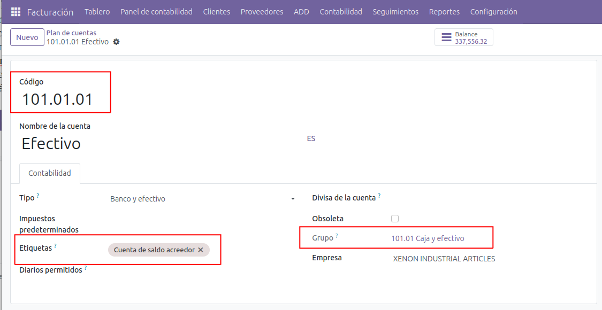
- Los grupos de cuenta se encuentran configurados por defecto al realizar una instalación para la contabilidad de México.
Los prefijos de código deben coincidir con los grupos de cuenta del catálogo del SAT.
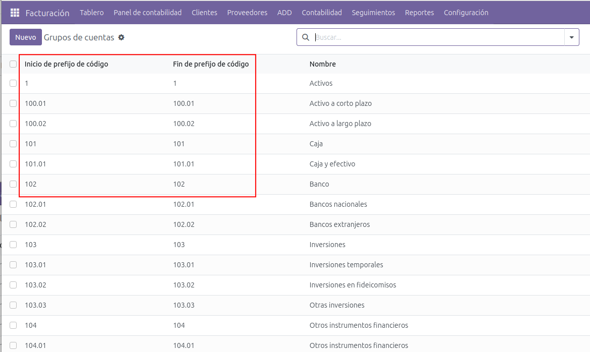
- En los proveedores se configuran los campos requeridos para la generación de la DIOT.
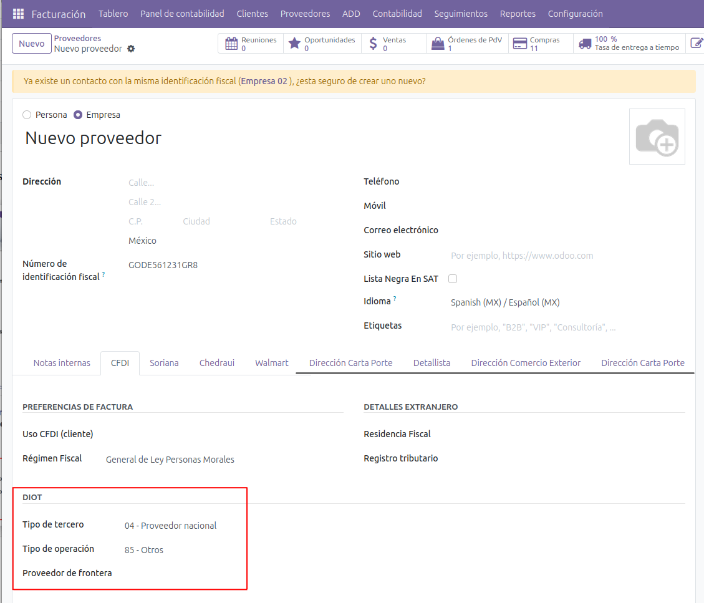
Seleccinar de asientos contables a incluir
- Por defecto todos los asientos contables se crean habilitando el check box de contabilidad electrónica (CE), esta bandera se puede utilizar para seleccionar que asientos contables se van a incluir en los reportes fiscales.
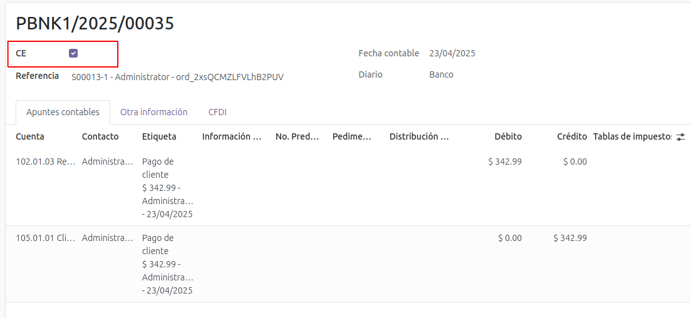
- Se cuenta con una función para habilitar pólizas de manera masiva que no se les ha habilitado el check box de CE.
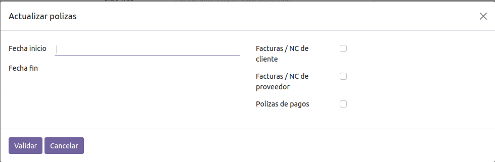
- Al generar el reprote de balanza de comprobación se puede habilitar para que solo muestre asientos que tengan el check box habilitado.
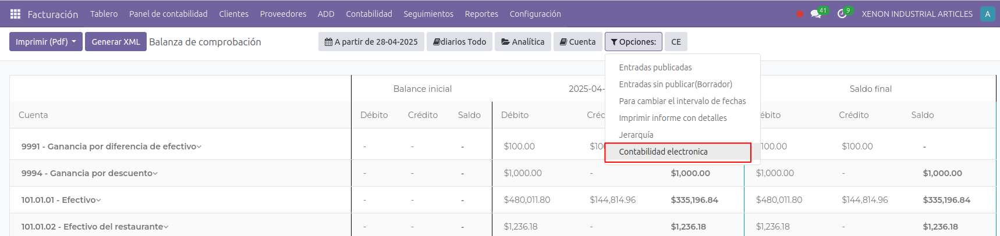
Generación de archivos de XML de contabilidad
- Catálogo de cuentas.
Seleccionar el reporte “Balance de comprobación” y en el menú se puede filtrar el mes que se quiera exportar.
Se debe dar clic en la opción “CE” y seleccionar la opción “catálogo de cuentas”, para generar el archivo XML dar clic en el botón correspondiente.
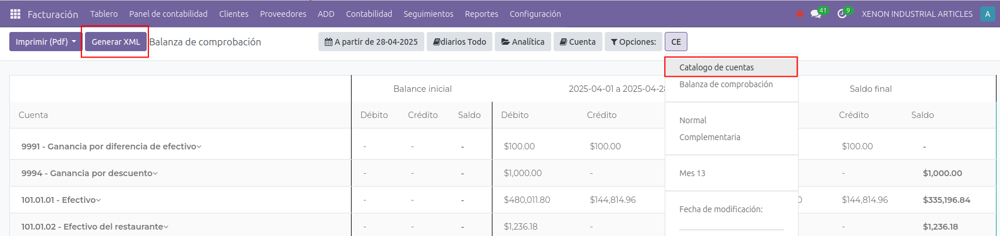
- Balanza de comprobación.
Seleccionar el reporte “Balance de comprobación” y en el menú se puede filtrar el mes que se quiera exportar.
Se debe dar clic en la opción “CE” y seleccionar la opción “Balanza de comprobación”, se pueden seleccionar otras opciones dependiendo del tipo de balanza que se quiera generar.
Para generar el archivo XML dar clic en el botón correspondiente.
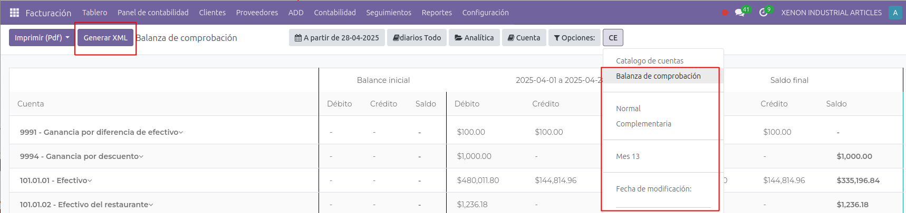
- Reporte de pólizas.
Este reporte no genera una vista, solo la descarga del archivo XML.
Seleccionar la opción de “Reporte de pólizas” y en el menú se selecciona las fechas para el reporte solicitado y los diarios a utilizar
en el reporte.
Al dar clic en generar se crea el XML para descargar.
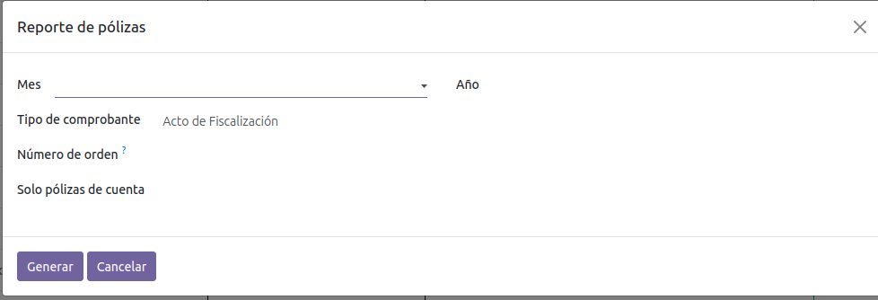
- Reporte de folios.
Este reporte no genera una vista, solo la descarga del archivo XML.
Seleccionar la opción de “Reporte de folios” y en el menú se selecciona las fechas para el reporte solicitado y los diarios a utilizar
en el reporte.
Al dar clic en generar se crea el XML para descargar.
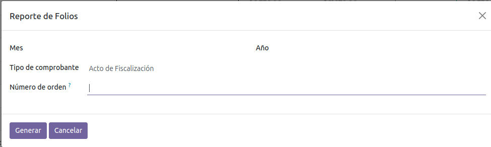
- Generar la DIOT.
Seleccionar la opción de “DIOT 2025”.
Aparecerá una vista donde se crean los registros de la DIOT, se recomienda tener un registro por año y mes.
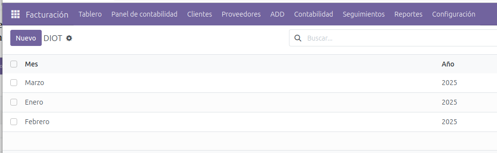
Al crear los registros se debe seleccionar el Mes y Año, posteriormente seleccionar “Calcular” para que se carge la información de dicho periodo en las pestañas.
Los registros permite la descarga de un archivo en XLS (para hacer cálculos adicionales) y TXT (para importación al SAT).
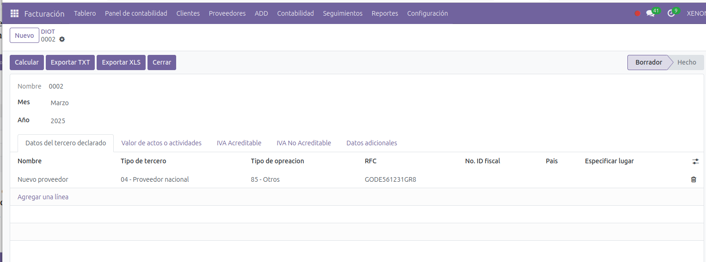
Este manual es una guía básica de las funcionalidades básicas del módulo. Para recibir asesoría
sobre sus dudas adicionales o una capacitación detallada, puede contratar consultoría.